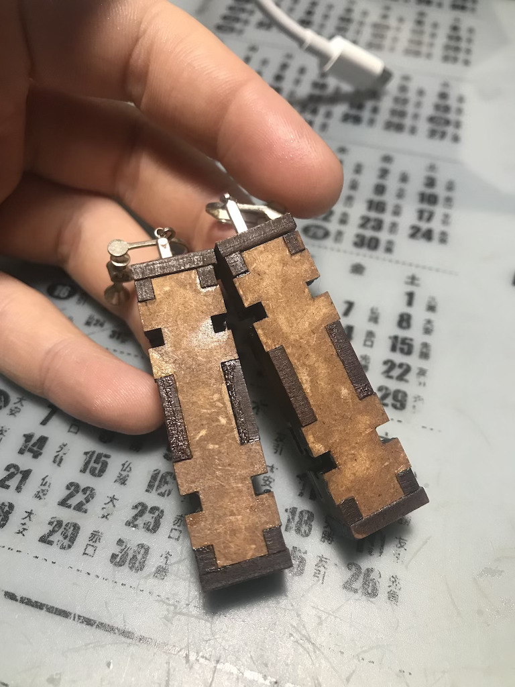
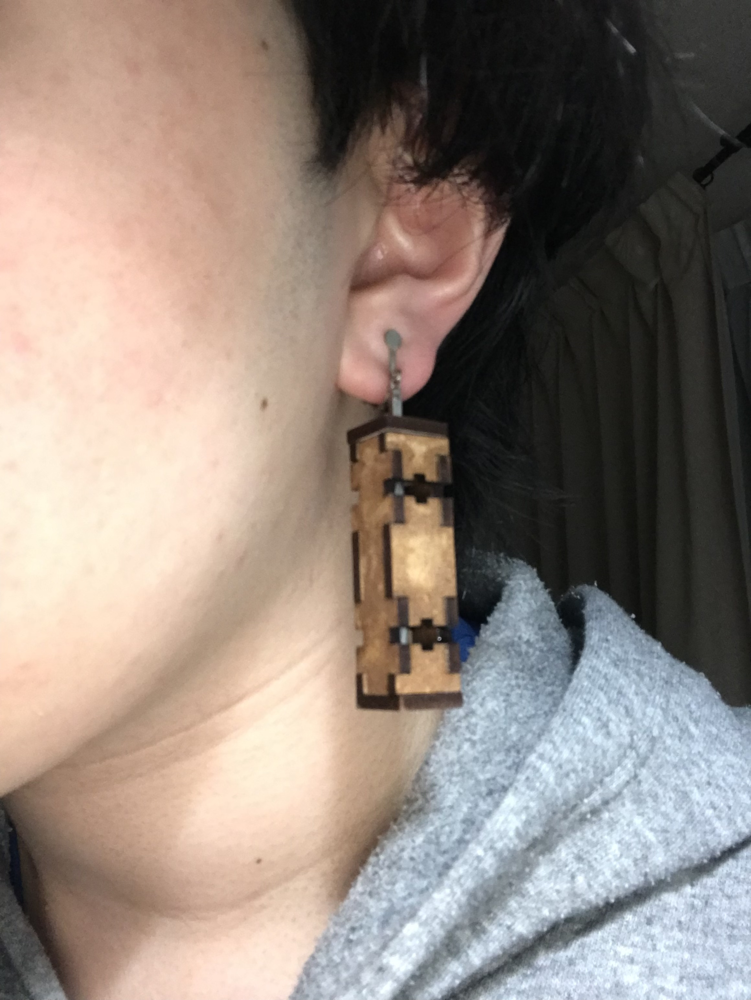

第2回 Computer-Controlled Cutting
私は今回、レーザー加工機を用いて、イヤリングを作りました。
1.なぜこれにしたか
今回の課題でイヤリングを作ろろうと思った理由は、主に３つあります。
- そもそも、自分自身、アクセサリーが好きだから
- 木を基調としたアクセサリーがあまり作られていないから
- レーザー加工機で立体を作った時の色合いが美しいと思ったため
2.制作過程
さて、実際、設計に入っていきます。
今回は、MakerCase（https://www.makercase.com/#/）を用いて、直方体を作り、
角面の繋ぎ目ををT字スロットにすることで、紋様のような穴を作り、デザインしました。
その後、そのデータをSVGファイルにし、Adobe Ilustratorで線の幅、色を設定し、
ファブラボのレーザー加工機で出力、組み立てて、作りました。
↓MakerCaseで設計した直方体

↓完成したイヤリング

↓付けるとこんな感じ

3.感想・まとめ
今回の課題では、無事、完成したものの、もっと凝ったデザインにしたかった点や本当はできたイヤリングの中にレジン液を流し、
透明にする予定なのですが、硬化のことを頭に入れていなかったので、中を空洞のままにしないといけなかったですし、
さらに、レジン液が本体に残ってしまい、
少し汚くなってしまったことが反省点です。しかし、結果的には、気に入ったデザインにできましたし、
色も味が出たので、個人的には悪くない出来にはなりました。
今後は、今回の経験を活かして多角的に考えることができるようようにしたいです。